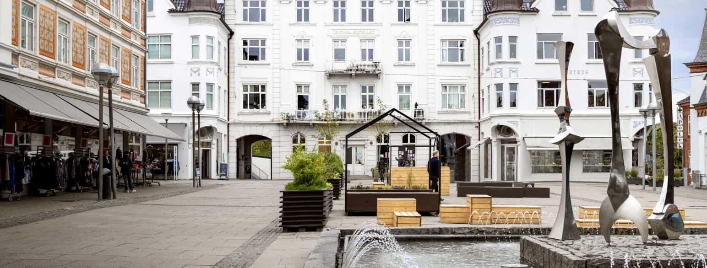
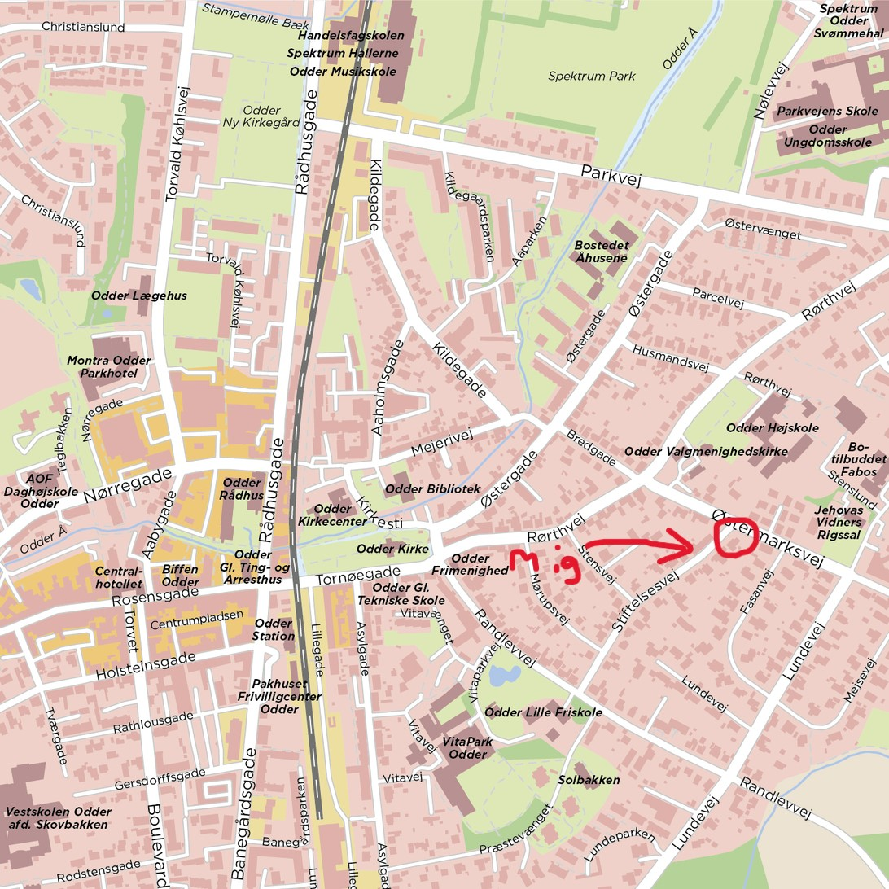
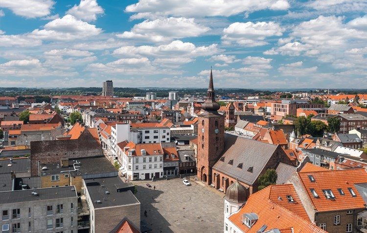
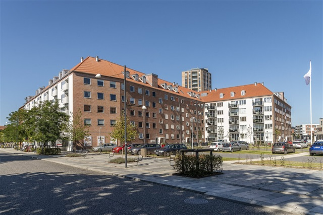
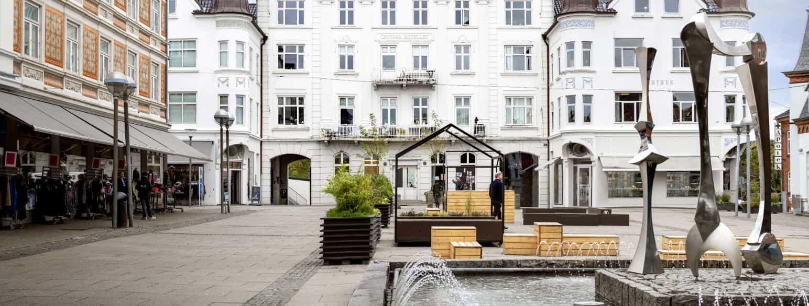
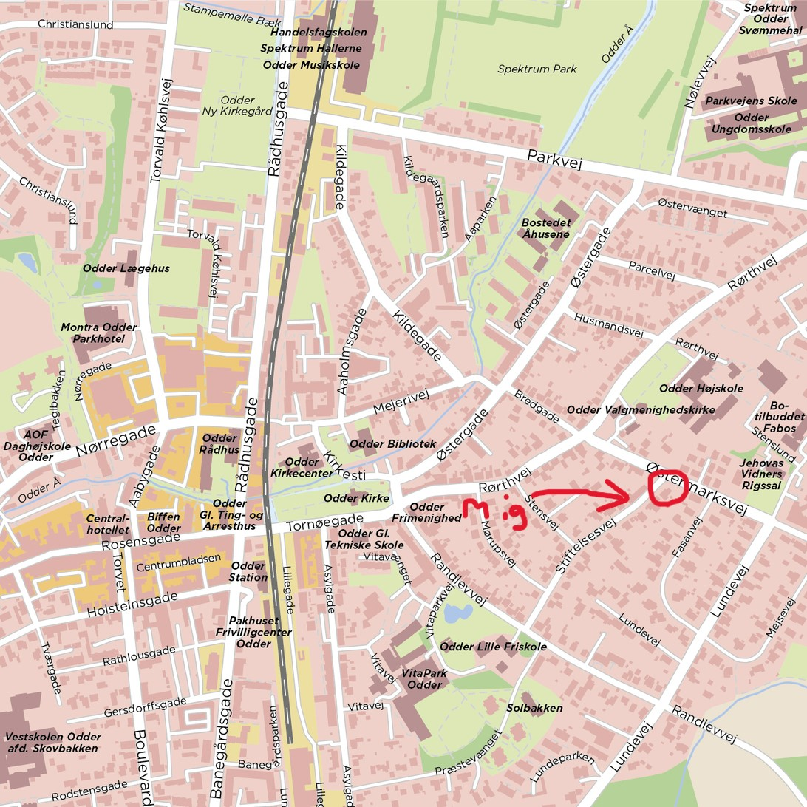
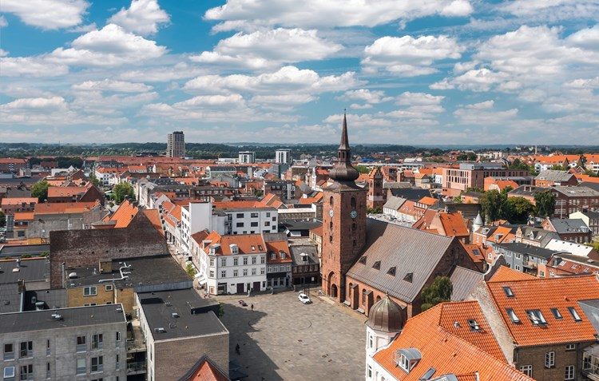
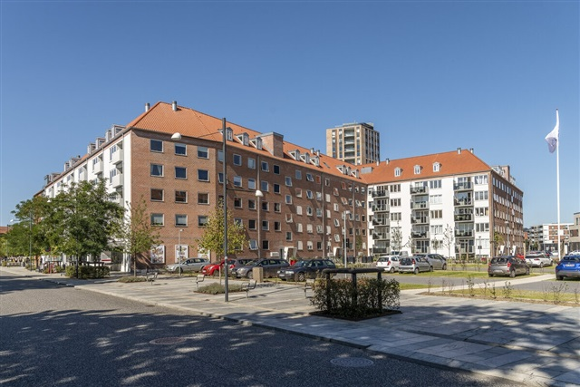

Odder er en stationsby i Østjylland med 13.274 indbyggere, beliggende i Odder Sogn. Den er samtidig hovedby i Odder Kommune og ligger i Region Midtjylland. Tidligere var den hovedby i Hads Herred.
Befolkningen i Odder by udgør cirka halvdelen af kommunens samlede indbyggertal.
Nærmeste større byer er Aarhus 21 kilometer mod nord, Skanderborg 19 kilometer mod nordvest og Horsens 25 kilometer mod sydvest. Odder er en selvstændig by, men fungerer i dag som en hyggelig lille forsmag på Aarhus. De to byområder er tæt forbundet via Aarhus Letbane.
Byen hævder sammen med fem andre at være Danmarks geografiske centrum.
Jeg boede i Odder fra da jeg var 15 år gammel, til jeg her i august som 23 årig flyttede hjemmefra.
Horsens er en by i Østjylland og er med sine 63.903 indbyggere Danmarks 7. største by.
Byen ligger inderst i Horsens Fjord på den jyske østkyst. Horsens er hovedby i Horsens Kommune i Region Midtjylland.
Den nævnes første gang i 12. århundrede og var en betydelig by i Middelalderen med adskillige klostre og fæstningsanlæg.
En række patricierhuse, bl.a. Jørgensens Hotel, vidner om at Horsens også var "købmændenes by" i 1700-tallet.
Jeg har nu boet i Horsens i 2 måneder. Jeg flyttede til byen for at være tættere på campus.
 






